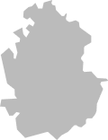
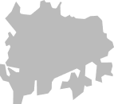

발길따라 입맛대로테마코스

역사 코스
역사란 현재와 과거의 끊임없는 대화이며 지나 가버린 과거에 대한 학문이 아닌
현재 속에 살아있는 과거로서의 의미 추구라 하였다.

축제 코스
과거 대한민국의 축제는 한가위나 동지, 설날, 대보름, 단오 등 대규모 축제를 마을 단위로 즐겼으며
현재에는 지방자치단체의 지역 홍보를 위한 지역, 특산 축제등이 이루어지고 있다.
각 지역만의 개성을 한껏 느끼며 경치를 즐기고 먹고 마시기 위한 코스

캠핑 코스
집과 도시를 벗어나 자연 속에 마련한 임시거처에 머무르면서
사람과의 우정을 돈독히 하고, 자연을 느끼며 배워 가는 것
도심의 빌딩숲을 벗어나 자연을 만끽할 수 있는 코스
코스후기워크홀릭들의 찐 후기



제주도
322
227
252
195
222
167
243
312
462
대장정 발길에 감성 한 스푼굿즈샵
WALKHOLiC™ 굿즈샵의 판매 수익 일부분은 대한민국 국토대장정의 발전과 청년 일자리 장려 지원금 및 취업 지원금으로 후원됩니다.
소통창구워크홀릭! 확인해요
공지사항
공지사항
더보기
공지사항
2023년 6월 판매수익금 기부 현황
WALKHOLiC™ 굿즈샵 판매수익금 기부현황 및 전달사항입니다. 6월 한달 동안 저희 WALKHOLiC 이용자 여러분의 성원에 힘입어 판매수익금의 일부를 미래를 이끌어 갈 청년들을 지원하고자 청년정책발전지원금으로 기부하고 있습니다. '청년의 발걸음 하나하나에 꿈을 싣다'라는 슬로건을 내세우고 있는 워크홀릭은 청년들의 주거지원 및 취·창업 지원, 정책참여 기회 증대 등을 위해 다양한 청년정책잘번지원금을 지원하고 있습니다.
July 3. 2023
더보기
보도자료
방학맞이 ‘공동체 의식 함양’, 대학생 100명의 대담한 도전
여름방학을 맞은 대학생 100여 명이 “담대한 도전”이라는 슬로건과 함께 지난 4일부터 내일(11일)까지 7박 8일간 제주시 국토대장정을 진행합니다. 도전정신과 극기체험을 통해 국토를 사랑하고 공동체 의식을 함양하자는 취지로 진행된 이번 행사는 제주 일대 170km를 걷는 코스로 구성됐습니다. 여름 방학 시작과 동시에 국토대장정을 도전하는 이들이 속속 눈에 들어온다. 한여름 땡볕에 꼬박 며칠을 쉴새 없이 걸어야 하는 국토대장정에 굳이 참가하는 이유는 뭘까? 실제로 대장정에 참여한 이들의 이야기를 들어봐도 목적이 너무 제각각이라(버킷리스트, 연애, 다이어트…등등) 감을 못 잡겠다. 그래서 정리해봤다. 국토대장정 가면 대체 무슨 일이 생기는가. 왜 매년 많은 사람이 사서 고생을 하는가.
July 5. 2023QNA
더보기국토대장정 QnA
자주 묻는 질문
-
국토대장정이 처음인데 어떤것부터 준비해야 하나요?
-
국토대장정을 갈 때 필요한 준비물에 대해 공유해보려고 합니다.
처음에 계획을 짜면서 필수적으로 필요한 준비물이 무엇일까 생각하여 이렇게 메모를 해두었습니다.
[기초화장품] 스킨, 크림, 선크림 [세면도구] 폼클렌징, 클렌징오일, 칫솔, 치약, 면봉
[양말] 발가락등산양말 4켤레, 일반 스포츠양말 2켤레, 일반 얇은 양말 1켤레, 발목보호대 1개, 무릎보호대 2개, [비상약] 진통제, 소화제, 감기약, 반창고, 파스, 바늘 등, 텀블러, [옷] 반팔 3개, 바지 3개, 속옷 4세트, 잠옷 1벌, 맨투맨, 바람막이, [옷걸이] 3개, 마스크 넉넉하게, 여행용 휴지, 팔토시, 우비, 손빨래 할 세제, 바디로션, 슬리퍼, 물통, 간식, 힙색, 테이핑, 여행용 물티슈 1개 [기타 필요한 용품] 등
이외에도 개인적으로 챙기시는 것이 좋지만 경량화 하는것 또한 중요하다고 생각합니다.
-
국토대장정을 갈 때 필요한 준비물에 대해 공유해보려고 합니다.
-
국토대장정에 꼭 챙겨 가야 할 물품은 어떤건가요?
-
1. 스포츠 의류, 수건
2. 우의
3. 선크림
4. 물집이나 염증 치료제
다른건 몰라도 상기 4개의 제품은 꼭 챙기시는게 좋을것 같습니다. 발로 걸어가는 국토대장정의 경우 ‘물집과 염증과의 싸움’이라고 표현할 수 있을 정도로 물집과 발목, 무릎 관절 염증은 꾸준히 따라다닌답니다.
보통 물집이 생기면 물집안의 물을 빼고 소독한 후 바람이 잘 통하게 해두어야 빨리 낫는데, 국토대장정 중에는 응급치료만 하고 다음날 다시 또 걸어야하기 때문에 제대로 낫기가 힘듭니다. 어느 정도의 통증은 감내하면서 걸어야 하죠. 그렇기 때문에 제대로 된 물집치료, 관리를 위한 물품들은 도보로 하는 국토대장정에서 필수랍니다.
-
1. 스포츠 의류, 수건
-
국토대장정 기간은 어느정도가 적당할까요?
-
1. 기간
기간은 하루에 몇km 갈것이냐에 따라 결정되는데요, 기간은 그냥 하루에 10km씩 걸어간다 하시면 150~160일 잡으시면 되고 20km씩 간다하면 75에서 80일 정도 나옵니다.
1-1 기상요건
하지면 여기서 끝이 아닙니다. 우리나라는 사계가 뚜렷하고, 맑은 날이 있으면 비오늘 날도 있지 않습니까? 또 6월쯤이면 폭우 등의 기상상황으로 인해 정상적인 횡단이 불가능한 날이 있을겁니다. 위에서 구한 기간에서 최소한 5~10일은 추가하시는 것을 추천드립니다.
2. 비용도 추가해볼게요
비용은 일단 거리가 거리다 보니 시간도 많이 들겁니다. 적어도 한달 이상은 걸리실것 같은데 여관에서 잔다 치고 물값, 약값, 비상금 등을 생각해보면 하루에 적어도 2만원은 쓴다고 가정하시는 것을 추천드립니다.
-
1. 기간
-
국토대장정을 개인으로 가도 괜찮을까요?
-
홀로 여행을 다녀오신 분의 후기를 공유해드릴게요.
아마 출발하시기 전에 한번 읽어보신다면 느끼시는 바가 있으실것 같아요.
[홀로 떠나는 국토대장정] 안녕 나는 혼자 국토대장정을 다녀온 사람이야 그리고 이 글은 내가 혼자 국토대장정을 떠나기 전날 심심하기도 하고 혹시 나처럼 국토대장정을 떠날 마음은 먹었으나 어떻게 해야 하는지 정보가 없는 사람에게 도움이 됐으면 좋겠다 싶어서 썼어.
-이 글에서는 너네가 떠날 여정의 스포일러가 간간이 있을 수도 있어 혹시라도 그런거에 민감한 사람은 피해줬으면 좋겠어 내 글을 읽고 강렬한 직접경험을 놓쳐버리면 얼마나 아깝겠어 그리고 그런 내용들은 후기 글을 통해 사진과 함께해서 추가로 글을 작성해볼게-
https://m.blog.naver.com/just_goit/221972439637
-
홀로 여행을 다녀오신 분의 후기를 공유해드릴게요.
-
국토대장정을 하면서 주의해야할 것은 무엇인가요?
-
대체로 폭염 속에 하루 7~8시간씩 30~40㎞를 도보로 이동하는 국토대장정의 특성상 가장 우려되는 부분은 열사병이다. 전문가들은 이동시 열사병에 걸리지 않기 위해서는 폭염 시 무리한 행군을 지양하고 물을 많이 마셔야 한다고 강조했다. 또 더위로 인한 현기증, 메스꺼움, 근육경련 등이 생기면 시원한 장소에서 쉬면서 즉시 가까운 병원으로 이동해 진료를 받아야 한다고 조언했다. 다음은 국토대장정시 주의해야 할 안전수칙들이다.
[열사병 증세] 혼수상태 및 경련, 발작 증세 등 [주의해야 할 사람] 심장이나 혈관질환이 있는경우, 폐질환이나 신장이 안좋은 경우, 과체중이나 저체중일 경우 [열사병 예방법] 맹물보다는 소금을 조금 탄 물을 마신다. 몸을 식히고 빨리 병원으로 이동한다. 등
-
대체로 폭염 속에 하루 7~8시간씩 30~40㎞를 도보로 이동하는 국토대장정의 특성상 가장 우려되는 부분은 열사병이다. 전문가들은 이동시 열사병에 걸리지 않기 위해서는 폭염 시 무리한 행군을 지양하고 물을 많이 마셔야 한다고 강조했다. 또 더위로 인한 현기증, 메스꺼움, 근육경련 등이 생기면 시원한 장소에서 쉬면서 즉시 가까운 병원으로 이동해 진료를 받아야 한다고 조언했다. 다음은 국토대장정시 주의해야 할 안전수칙들이다.